시트로엥 Citroën
시트로엥(Citroën)은 1919년 기술자 앙드레 시트로엥에 의해 설립된 프랑스의 자동차 회사이다. 다양한 승용차 모델을 개발하고 생산한다.
최종 업데이트
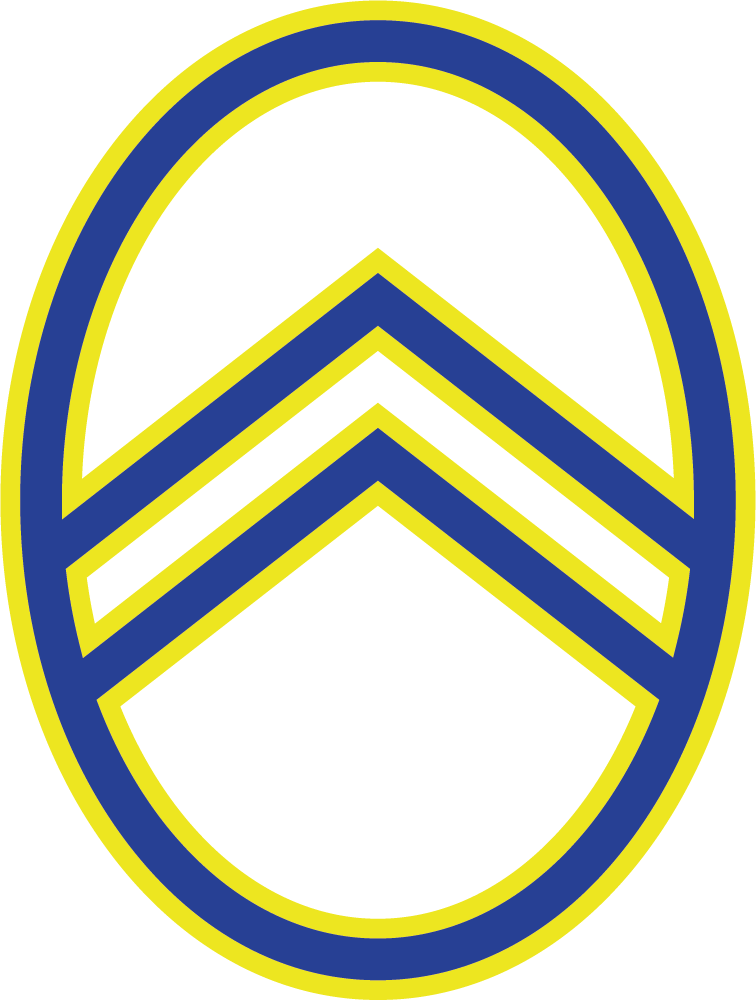
시트로엥은 어떤 브랜드인가
시트로엥(Citroën)은 1919년 기술자 앙드레 시트로엥에 의해 설립된 프랑스의 자동차 회사이다. 이 브랜드는 프랑스어 현지 발음인 '시트로엔'과 달리 대한민국에서는 '시트로엥'으로 더 잘 알려져 있으며 상표 등록도 그렇게 되어 있다.
과거 푸조와 함께 PSA 그룹 계열이었으나, PSA와 FCA의 합병으로 현재는 스텔란티스 계열의 주요 브랜드가 되었다. 대한민국 시장에 재진출하여 승용차용 커먼레일 디젤 엔진 모델을 주력으로 판매했으며, 고급형 DS 시리즈와 C시리즈 모델을 선보였다.
현재는 글로벌 모기업의 전략 아래 사업을 전개하고 있다.
시트로엥의 브랜드 아이덴티티는 무엇인가
이 브랜드는 기술자 앙드레 시트로엥에 의해 설립된 프랑스 자동차 회사로, 커먼레일 디젤 엔진 모델을 주력으로 하며 독특한 디자인을 선보였다.
시트로엥의 대표 제품과 서비스는 무엇인가
시트로엥은 다양한 승용차 모델을 선보이며, 특히 승용차용 커먼레일 디젤 엔진 모델을 주력으로 생산한다. 고급형인 DS 시리즈와 C시리즈 모델을 시장에 출시했으며, 시트로엥 C4 칵투스, 시트로엥 C3 에어크로스, 시트로엥 C5 에어크로스 등의 차종이 있다.
역대 차종 중 XM과 잔티아는 이탈리아의 디자인 스튜디오인 그루포 베르토네에서 담당하며 독특한 디자인으로 알려지기도 했다. 이 회사는 폭넓은 제품군을 통해 여러 소비자층에 다가가고자 한다.
시트로엥은 지금 어떤 상태인가
시트로엥 로고는 어떻게 변해왔나
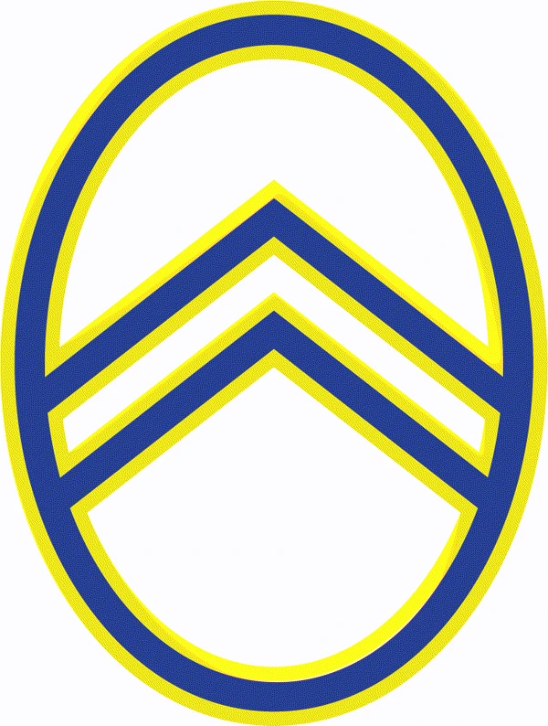
1919–1921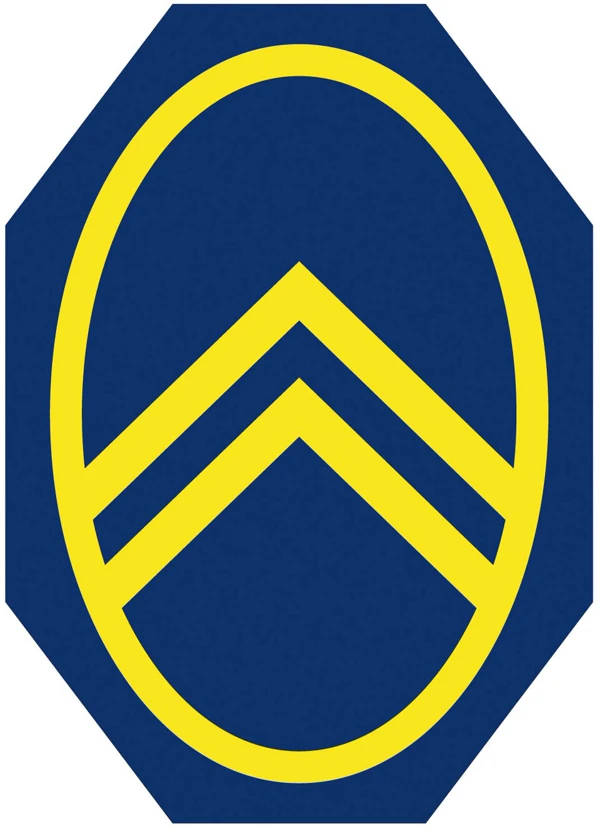
1921–1932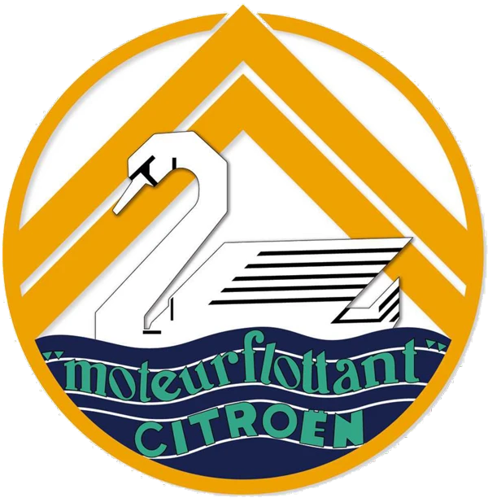
1932–1936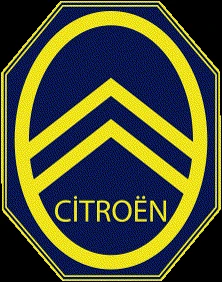
1936–1959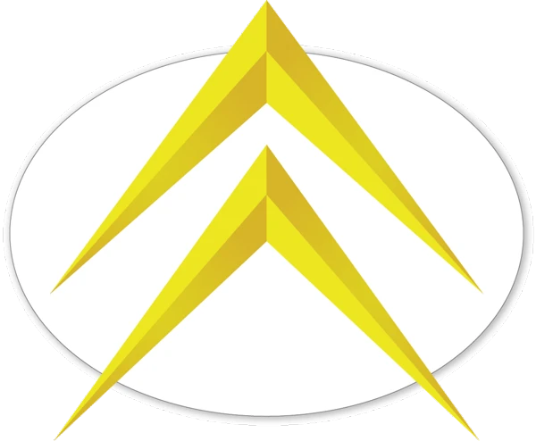
1959–1966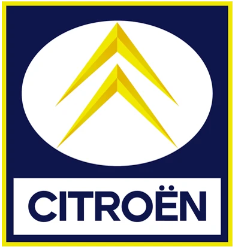
1966–1985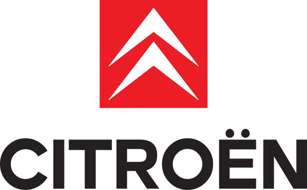
1985–2009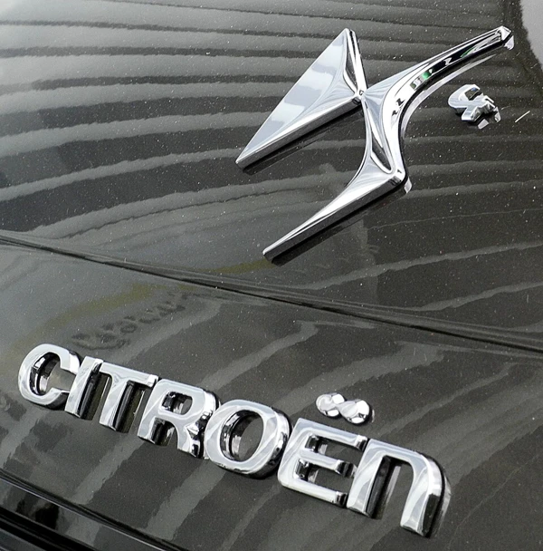
2011–2016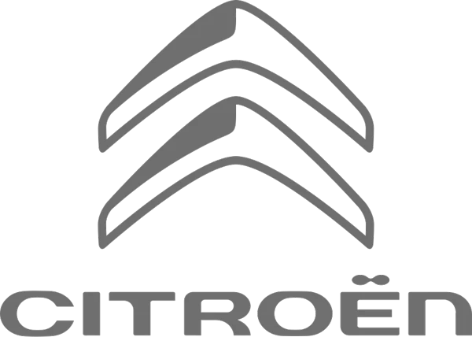
2016–2022- 2022–2026
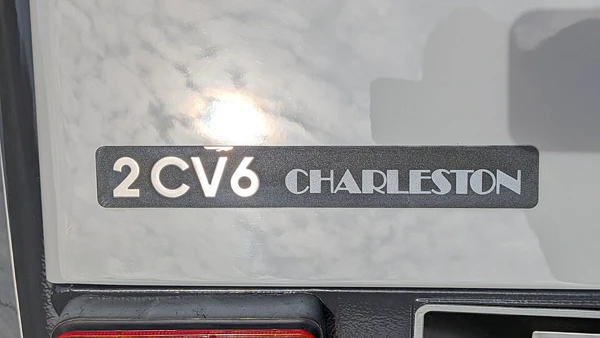
2026–2026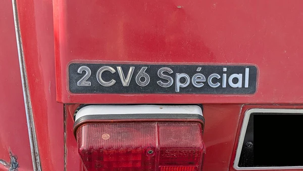
2026–2026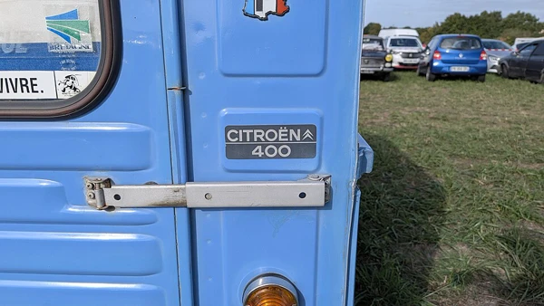
2026–2026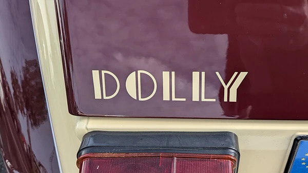
2026–2026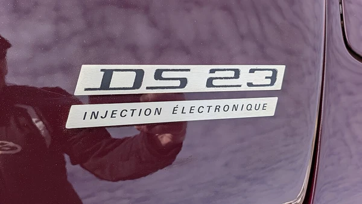
2026–2026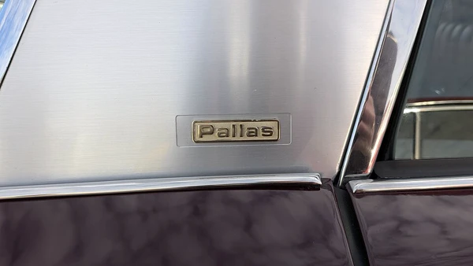
2026–2026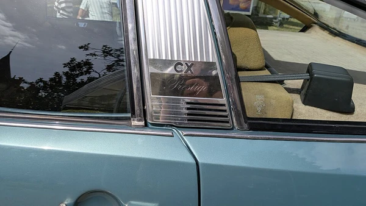
2026–현재
시기는 위키데이터 로고 기간 또는 위키미디어 커먼즈 파일 정보 기준입니다. 이미지를 누르면 원본 파일과 라이선스를 볼 수 있습니다.
사진으로 보는 시트로엥의 역사
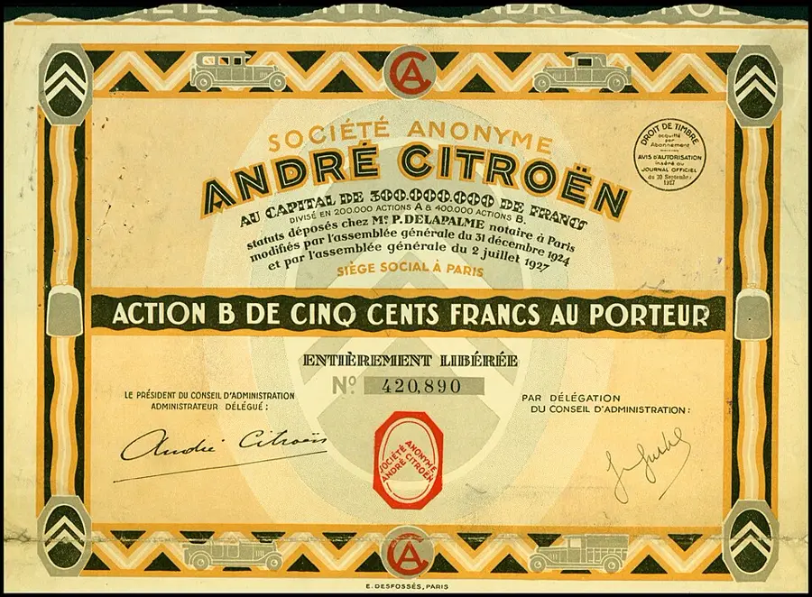
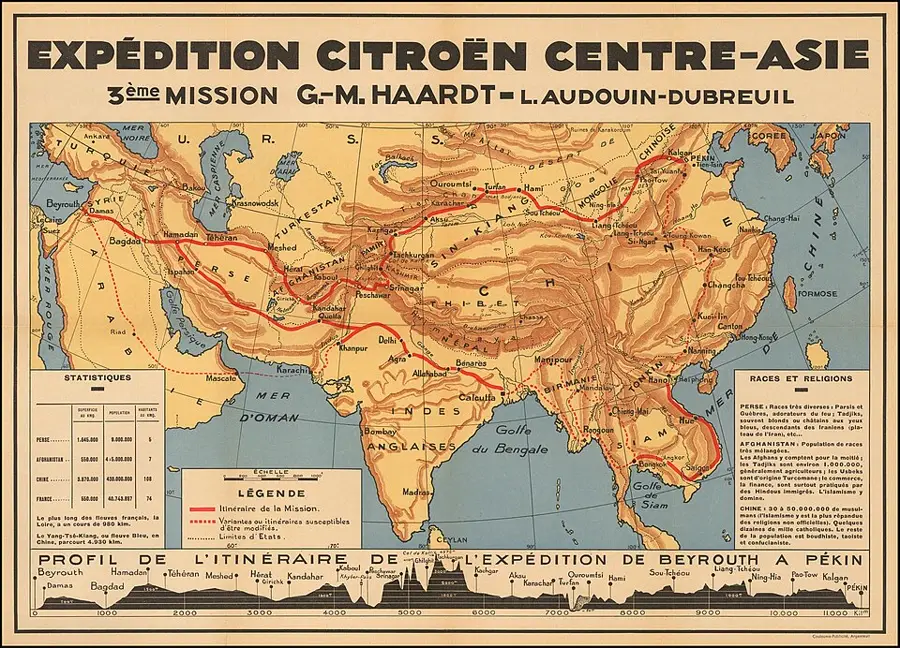
자주 묻는 질문
시트로엥는 어느 나라 브랜드인가요?
시트로엥는 프랑스의 모빌리티 브랜드입니다.
시트로엥는 언제 설립되었나요?
시트로엥는 1919년 설립되었습니다.
시트로엥의 브랜드 아이덴티티는 무엇인가요?
이 브랜드는 기술자 앙드레 시트로엥에 의해 설립된 프랑스 자동차 회사로, 커먼레일 디젤 엔진 모델을 주력으로 하며 독특한 디자인을 선보였다.
시트로엥의 대표 제품은 무엇인가요?
시트로엥은 다양한 승용차 모델을 선보이며, 특히 승용차용 커먼레일 디젤 엔진 모델을 주력으로 생산한다.
시트로엥는 현재 어떤 상태인가요?
시트로엥은 푸조와 함께 PSA 그룹 계열이었으나, PSA와 FCA가 합병하면서 현재는 스텔란티스 계열에 속한다.
시트로엥의 창업자는 누구인가요?
시트로엥의 창업자는 앙드레 시트로엥입니다(위키데이터 기준).
시트로엥의 본사는 어디에 있나요?
시트로엥의 본사는 PSA Poissy Plant에 있습니다(위키데이터 기준).
출처와 검증
시트로엥 관련 참고: 공식 웹사이트 · 위키데이터 Q6746 · 한국어 위키백과 · 영어 위키백과. 브랜드명은 한글과 원어를 함께 표기하되 데이터에 없는 표기는 만들지 않습니다. 기원 국가·설립연도는 검수된 정의문에서 확인된 값을 우선하고, 없을 때만 공식 웹사이트 URL이 일치하는 위키데이터 개체의 값을 씁니다. 탄생일의 월·일은 위키데이터, 위키백과 정보상자, 본문 가운데 같은 연월로 확인되는 값만 싣고, 출처끼리 다르면 싣지 않습니다. 웹 첫 보관은 인터넷 아카이브가 공식 사이트 첫 화면을 처음 보관한 날로, 사이트 개설일과 다를 수 있습니다. 위키데이터 값은 2026-09-07 기준입니다.